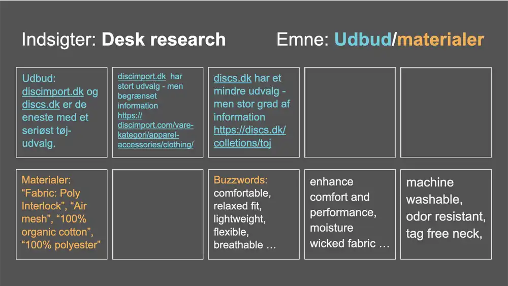
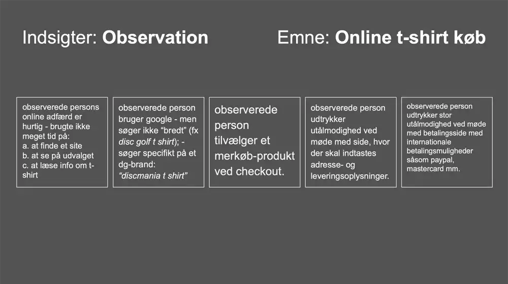
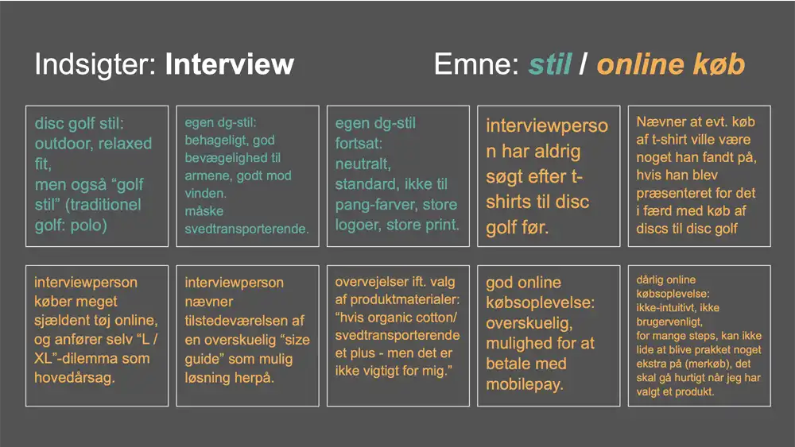

Desk research
Desk research kan oversættes med research "ved skrivebordet", hvilket er sigende for metoden. Vi skal nemlig ikke ud i verden og lave ny data men snarere undersøge og søge allerede eksisterende information. Dette kan foregå online, i bøger mv.
Desk research er god som indledende manøvre. Man kan læse sig til en overordnet forståelse af sit undersøgelsesobjekt, og se hvilke aspekter der fremhæves af andre.
Min desk research
Da mit site skulle sælge tøj til disc golfere, satte jeg mig for at undersøge 1) udbuddet i Danmark, 2) hvilke materialer der blev anvendt, samt 3) hvilke buzzwords der blev brugt til at sælge tøjet.

Observation
At observere personer i færd med en for undersøgelsen relevant aktivitet giver én mulighed for at se på, hvilken kontekst aktiviteten foregår i. Man kan således få svar på spørgsmål som: Hvem, hvad, hvor og hvordan.
Man bør tilstræbe en nysgerrig åbenhed over for det observerede objekt, for derigennem at kunne komme til potentielt nye indsigter. Er man for indsnævret, kan det vise sig at man kun be- eller afkræfter sine egne antagelser.
Min observation
Jeg kontaktede en bekendt, der spiller disc golf flere gange ugentligt. Vi fik sat en observation op hjemme hos denne den efterfølgende dag, hvor jeg medbragte min computer + mus. Jeg satte en skærmoptagelse i gang og begyndte at optage lyd med min telefon.
Nu bad jeg den interviewede om at “tænke højt”, mens han foretog et online køb af en t-shirt. Jeg fokuserede min observation på det online køb af en t-shirt fra forskellige sites: Først fra sitet: dadbrand.com, derefter fra et valgfrit site, og slutteligt fra sitet: spreadshirt.com.

Interview
Interviewet giver kvalitativ data. Man har adgang til en målgruppepersons forståelsesramme og logik. Det er her vi kan bevæge os højest op i taksonomi: “hvorfor”-spørgsmål kan besvares, idet der kan defineres, uddybes og opklares løbende.
Men svarene fra én interviewperson er ikke nødvendigvis repræsentative for målgruppen, så flere interviews vil være at foretrække.
Overlap i informationer bringer os tættere på målgruppens 'sandheder'.
Mit interview
Jeg var særligt interesseret i at blive klogere på to aspekter under mit interview:
Jeg ville vide mere om, 1) hvorvidt der kunne siges at være en tøjstil indenfor disc golf, og 2) hvad en disc golfer lægger vægt på i en online købsproces af tøj til disc golf.
Jeg kontaktede en bekendt, der spiller disc golf flere gange ugentligt. Vi fik sat et interview op hjemme hos denne den efterfølgende dag, hvor jeg optog lyd med min telefon.
Interviewet kan beskrives som uformelt og semistruktureret.

Survey